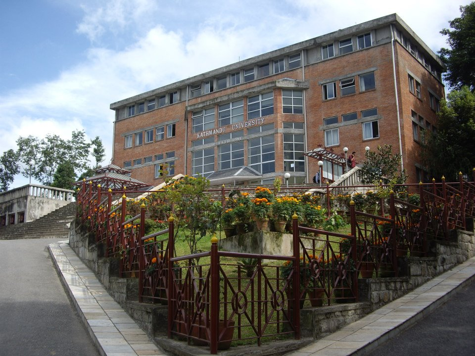
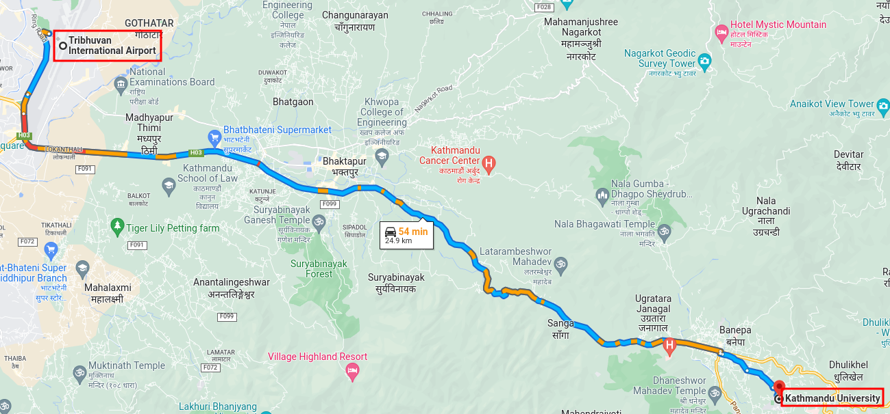

Venue
Like previous year, 2023 Conference will be held in
Kathmandu University, Dhulikhel, Nepal.
Kathmandu University
Dhulikhel is a small town located in the Kavrepalanchok District of Nepal,
about 30 kilometers southeast of Kathmandu.
It is known for its beautiful views of the Himalayan mountain range and its rich cultural heritage.
There are several guesthouses and hotels in Dhulikhel where you can stay,
as well as many places to eat and shop. The town is also a popular starting point for
trekking and hiking in the surrounding hills.
Kathmandu University (KU) is located in the Dhulikhel area, about 30 kilometers southeast of Kathmandu city. It is the third oldest university in Nepal and one of the most prestigious institutions of higher education in the country. The main campus of the university is located in Dhulikhel and it offers undergraduate and graduate programs in various disciplines such as Engineering, Management, Medicine, Science, and Humanities. 
Visa
For visa related details please refer Department of Immigration
and Immigration Office, Tribhuvan International Airport.
Travel
Airport:Tribhuwan International Airport is the only international airport located in Kathmandu.

There are several ways to reach Kathmandu University (KU) from Tribhuwan International Airport (TIA) in Kathmandu.
By Taxi: Taxis are readily available outside the airport terminal. You can hire a taxi for the entire journey to KU, which will take around 1 hour and 30 minutes depending on the traffic. The fare for the taxi ride will vary depending on the type of vehicle and the time of day.
By Bus: There are several bus routes that connect TIA to Dhulikhel, where KU is located. From the airport, you can take a bus to Kathmandu and then take another bus or a microbus to Dhulikhel. The journey by bus will take around 2 hours.
By Private Car: You can also hire a private car to take you directly from the airport to KU. This option is more convenient and comfortable but it will be more expensive than taking a taxi or a bus.
Hospitality Partner
Mark on your calender
2023 May 11 (Thu) ~ 12 (Fri)
@Dhulikhel, Nepal

Nevigate to venue
Event Sponsors
Platinum Sponsor : Postgres Professional

Key Dates
CFP Deadline : March 24, 2023
Notification of Acceptance : March 30, 2023
Registration Open : April 1, 2023
Registration Open for pre-conference training: March 20, 2023
Notification of Acceptance : March 30, 2023
Registration Open : April 1, 2023
Registration Open for pre-conference training: March 20, 2023